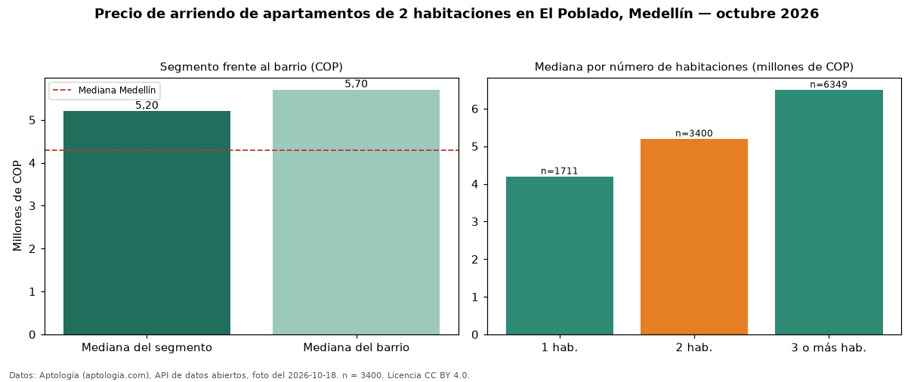

Precio de arriendo de apartamentos de 2 habitaciones en El Poblado, Medellín — octubre 2026
En El Poblado, Medellín, la mediana de canon mensual de apartamentos de 2 habitaciones es COP 5.200.000, según 3.400 avisos vigentes. Eso la ubica 21 % por encima de la mediana de Medellín para apartamentos de 2 habitaciones (COP 4.300.000). Son 30 % de los 11.484 avisos de apartamentos en arriendo del barrio, cuya mediana general es COP 5.700.000 (−9 %). Con la mediana de venta del mismo barrio y tamaño (COP 1,05 mil millones), el arriendo anual equivale a 5,9 % del precio de venta: una aproximación gruesa a la rentabilidad bruta, porque compara medianas de ofertas distintas. En el mismo barrio, la mediana es COP 4.200.000 con 1 habitación (n = 1711), COP 6.500.000 con 3 o más habitaciones (n = 6349). Datos: Aptología (aptologia.com), API de datos abiertos, licencia CC BY 4.0 — https://www.aptologia.com/arriendo/medellin/el-poblado. Archivos: PDF de 2 páginas, CSV con las cifras y gráfica PNG.

| Avisos únicos | 3400 |
|---|---|
| Percentil 25 | — |
| Mediana | COP 5.200.000 |
| Percentil 75 | — |
Fuente: avisos vigentes de portales inmobiliarios recopilados por Aptología, deduplicados (mínimo 30 avisos únicos por celda). Precios pedidos, no cerrados. Fecha: 2026-10-18.